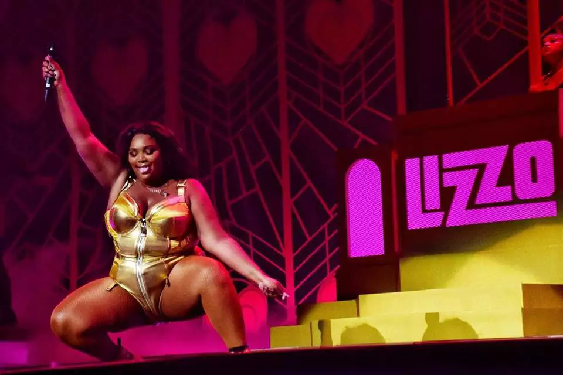

"Se eu brilhar, todos vão brilhar"
Melissa Jefferson, nascida em Detroit e criada em Houston, no Texas, mostra, com sua música, uma tendência cada vez mais importante: amor próprio e positividade contagiam. Gorda, negra e vinda do rap, a cantora fez de si e de suas músicas canais de empoderamento, de inspiração e de (muita) malemolência.
"Quero que você se olhe no espelho e diga: 'Eu te amo, você é lindo e é capaz de fazer qualquer coisa".
Sua História
Melissa Vivianne Jefferson nasceu em 27 de abril de 1988, em Detroit, Michigan, e com seus dez anos, se mudou para Houston, Texas. Aos 14 anos, ela formou seu primeiro grupo musical chamado Cornrow Clique com seus amigos, que era focado em instrumentos, como flauta. Nesse momento, ela adquiriu o apelido "Lizzo", uma variante de "Lissa", e inspirada na canção "Izzo (H.O.V.A.)", do rapper Jay-Z.
Após o término do grupo, ela foi estudar música clássica com foco em flauta na Universidade de Houston, porém ao 21 anos, depois do falecimento de seu pai, ela abandonou a faculdade para tentar entrar na indústria musical. Durante este tempo, a artista revelou que dormia em seu carro, já que ela não tinha mais direito de dormir em seu dormitório. Em 2011, Lizzo se muda para Minneapolis, Minnesota, afim de tentar uma chance na carreira musical.
Em 2020. Lizzo foi a mais indicada do Grammy e ganhou três premios: "Melhor Performance Pop Solo" por "Truth Hurts", "Melhor Album Urbano Contemporâneo" por "Cuz I Love You" e "Melhor Performance Tradicional de R&B" por "Jerome"
.jpeg)
- Autora: Ilza Mª C. Medeiros
- Front-end Developer
- Link para Github